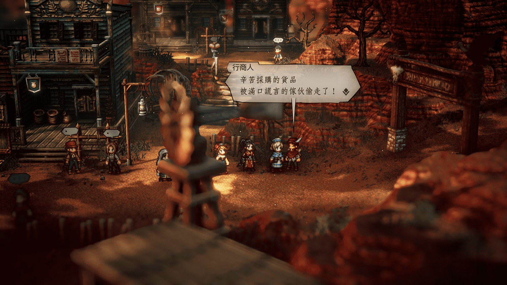
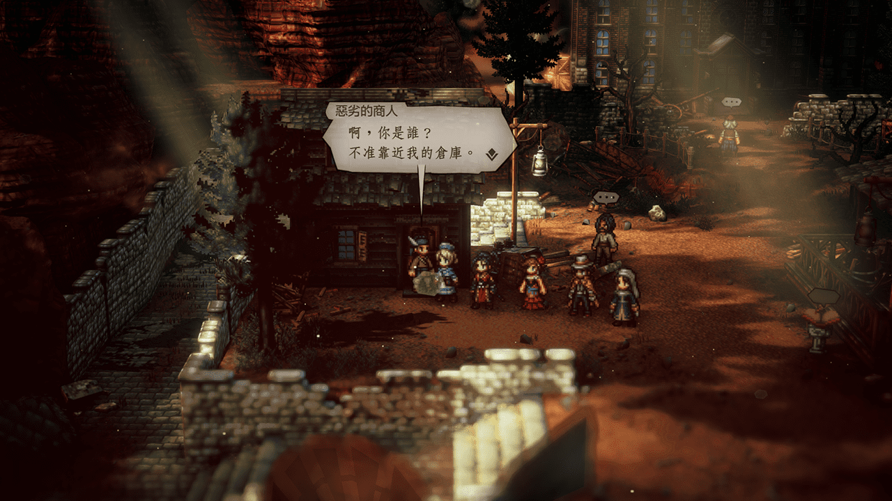
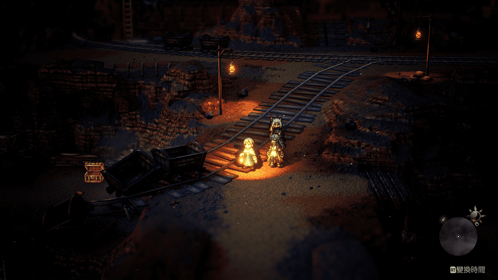
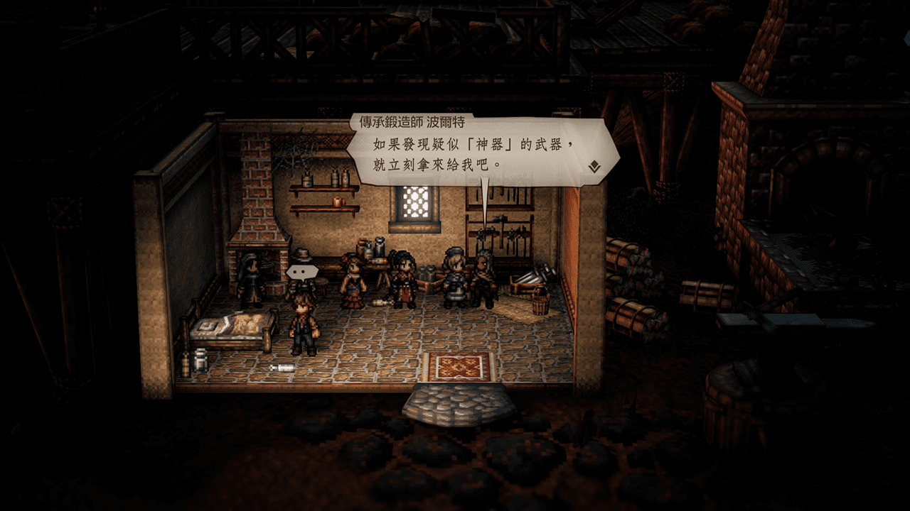

外爾蘭多地區 Wildlands
NPC
商人初始城 瓦茲樂修 行商人

Solution
瓦茲樂修-鑄造場 打趴 擋在門口的 惡劣的行商人
進倉庫開寶箱即可拿回 採購的商品

Reward
3000元
增加速度的堅果
恢復HP的葡萄(大)
NPC
商人初始城 瓦茲樂修 道具店前 喬

Solution
大致上就是對著本鎮曾是商人小弟的3人使用 探/聽 相關技能
哈利的自嘲：在前往鑄造場的入口前找到哈利 探/聽
奈德的情話：在酒吧裡找到奈德 探/聽
尼基的特別笑話：在旅宿外的二樓找到尼基 探/聽
Reward
3500元
增加SP的堅果(大)
NPC
未完工的隧道 內找到 工程負責人（西大陸 南庫拉雷吉荒道 最左上方）

Solution
討伐魔物的路途上別錯過這個寶箱—天然的磁鐵礦 用於發明家任務

之後至深處打BOSS戴特摩爾
因旁邊就有存檔點 我就不附圖和附弱點了~說好的不劇透
而且都能走到這裡了打BOSS應該不難才對
打完BOSS後自動進入劇情
然後就可拿他身後的寶箱：增加弱化的護身符(弱化效果回合數+1)
Reward
5000元
增加屬防的堅果(特大)
NPC
古拉貝爾 立志成為巨星的青年

Solution
順著對話把村子裡所有 大人 都弄昏就好了(日/夜任一場景皆可過)
待全村的大人都昏迷後會自動展開劇情
雖部份有其他支線任務的人物不用弄昏也可，但為求省事都弄昏比較方便
Reward
15000元
華麗誇張的帽子(物防+53、魔攻+53、更容易被敵人攻擊)
NPC
古拉貝爾 擔心女兒的母親（從提示中得知大概的位置在 西古拉貝爾荒道 的谷底）
Solution
城鎮走出去後即是 西古拉貝爾荒道 依提示往谷底走 即可發現 白色幽谷
 在白色幽谷探索失蹤少女時別錯過這兩把寶箱武器
被遺望的種族之斧 (物攻+381、暴擊-102、賦予混亂效果)
夕霧魔弓 (物攻+293、屬攻+325、賦予暗闇效果)
在深處 存檔點 附近即可發現 失蹤少女
在白色幽谷探索失蹤少女時別錯過這兩把寶箱武器
被遺望的種族之斧 (物攻+381、暴擊-102、賦予混亂效果)
夕霧魔弓 (物攻+293、屬攻+325、賦予暗闇效果)
在深處 存檔點 附近即可發現 失蹤少女
 擊倒BOSS可得
災禍魔眼 (物攻+120、屬攻+120、戰鬥開始時受到物攻和屬攻下降效果)
和關卡重要道具混濁水晶手環
擊倒BOSS可得
災禍魔眼 (物攻+120、屬攻+120、戰鬥開始時受到物攻和屬攻下降效果)
和關卡重要道具混濁水晶手環
在白色幽谷探索失蹤少女時別錯過這兩把寶箱武器
被遺望的種族之斧 (物攻+381、暴擊-102、賦予混亂效果)
夕霧魔弓 (物攻+293、屬攻+325、賦予暗闇效果)
在深處 存檔點 附近即可發現 失蹤少女
擊倒BOSS可得
災禍魔眼 (物攻+120、屬攻+120、戰鬥開始時受到物攻和屬攻下降效果)
和關卡重要道具混濁水晶手環
Reward
15000元
姊妹的護身符 (速度+100、暴擊+100)
NPC
在 古拉貝爾 找到 傳承鍛造師 波爾特

Solution
將以下 生鏽系列 的武器(一次或分次)拿給他鍛造成王者系列
| 鍛造前 | 取得處 | 鍛造後 |
|---|---|---|
| 生鏽的劍 | 完成支線任務【拔不出的劍】 | 霸王之劍 |
| 生鏽的長槍 | 西大陸 廷貝倫-城前廣場 左側打暈看門 老兵 後走到底的寶箱中 | 戰王之槍 |
| 生鏽的短劍 | 分離之海→女帝的骸船 寶箱取得 (迷宮中順便拿盜賊王的藍寶石) | 舞王短劍 |
| 生鏽的斧 | 西大陸 西塞伊沙道→流沙牢獄 寶箱取得 | 勇王之斧 |
| 生鏽的弓 | 東大陸 杜杜赫赫島-南納那西古道→下沉遺跡 寶箱取得 | 狩王之弓 |
| 生鏽的杖 | 東大陸 國境瀑布→水靈之座 洞窟寶箱取得 | 靈王之杖 |
Reward
20000元
堅王的盾
NPC
完成獵人終章後在 古拉貝爾 鍛造爐旁找到 艾琶歐涅 自動展開劇情

Solution
對鎮外入口附近的 商人 探/聽 即可得到 狩獵魔物的委託 這一資訊
之後將這件事轉達給 艾琶歐涅 即可完成任務
Reward
10000元
艾琶歐涅的護身符(最大HP+1200、HP愈低攻擊傷害愈大)